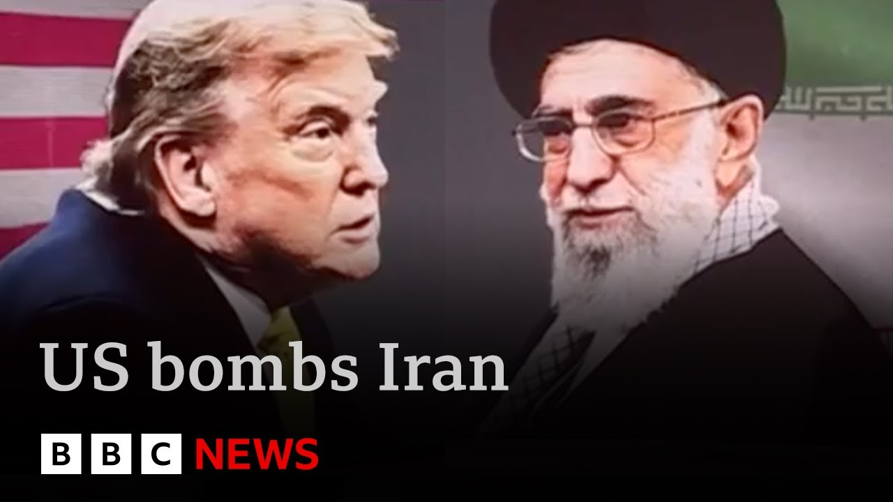

【BBC新闻：伊朗威胁切断石油供应并警告美国基地“易受攻击”】
Summary: The article discusses escalating tensions between Iran and the US after strikes on nuclear sites, with concerns over regime change, retaliation, and international calls for de-escalation.
摘要： 文章讨论了伊朗和美国在核设施遭袭后紧张局势升级，涉及政权更迭、报复行动以及国际社会呼吁缓和局势。

⏱️ Estimated Reading Time: 37 min
📚 六级生词 📚 雅思生词 📚 托福生词 📚 专八生词 📚 SAT生词 📚 考研生词 📚 GRE生词 📚 高考生词
The Trump administration has bombed Iran with strikes President Trump claims have obliterated the country's nuclear enrichment facilities 10 days after Israel launched its attacks on the country.
特朗普政府在以色列发动袭击10天后轰炸了伊朗，特朗普总统称已摧毁该国的核浓缩设施。
Iran's foreign minister denied that the US strikes had caused a major blow and accused the US of breaking international law.
伊朗外长否认美国打击造成重大损失，并指责其违反国际法。
Thran is threatening retaliation, including closing a strategically important sea passage.
德黑兰威胁报复，包括关闭具有战略意义的海上通道。
The UN Security Council is holding an emergency meeting now.
联合国安理会正在召开紧急会议。
The secretary general said dialogue must prevail to stop the Middle East falling into a cycle of retaliation.
秘书长表示必须通过对话阻止中东陷入报复循环。
Well, the US struck three key uranium enrichment sites, one of them for these are the latest satellite images of that area.
美国袭击了三个关键铀浓缩设施，其中一处的最新卫星图像如下。
Difficult to assess the extent of the damage because the site is built deep under mountains.
因设施深埋山体之下，破坏程度难以评估。
The US also bombed the nuclear sites of Natans and Isvahan.
美国还轰炸了纳坦兹和伊斯法罕的核设施。
This is Isvahan before the US strikes and afterwards you can see the damage inflicted by the bombing.
这是伊斯法罕遭袭前后的对比图像，可见轰炸造成的破坏。
We're dedicating most of our program to looking at how the US carried out the attack to global reaction.
我们将在节目中重点分析美国如何实施袭击及全球反应。
Chris Mason will be here to tell us about a phone call that's just happened between Donald Trump and Kia Starmmer.
克里斯·梅森将报道特朗普与基尔·斯塔默刚刚的通话。
And crucially, we look at what may happen next.
关键问题是接下来可能发生什么。
We also report from Israel after Iran launched another barrage of missiles today.
我们还将报道伊朗今日再次向以色列发射导弹后的以方动态。
Our BBC Persian colleagues have been hearing from people inside Iran and we report from Turkeykey's border with Iran as people leave.
BBC波斯语同事采访了伊朗民众，并报道土耳其与伊朗边境的撤离情况。
First tonight, let's go to Sarah Smith in Washington.
今晚首先连线华盛顿的莎拉·史密斯。
Sarah, Donald Trump has just posted on social media that the damage to Iran's nuclear strikes is monumental, but at the same time, he is trying to stress that he doesn't believe his country is now at war with Iran.
莎拉，特朗普刚在社交媒体称对伊朗核设施的打击"具有历史意义"，但同时强调不认为美伊已处于战争状态。
The vice president, JD Vance, has said they are at war with Iran's nuclear program, but not with the country.
副总统万斯称这是针对伊朗核计划的战争，而非针对该国。
And you've got officials emphasizing that they're not trying to topple the ruling regime in Thran.
官员们强调无意推翻德黑兰政权。
And the Secretary of State, Marco Rubio, saying it's time to get back to direct negotiations between the US and Iran, and that America would be ready to talk tomorrow.
国务卿卢比奥称应恢复美伊直接谈判，美国愿明日就谈。
All of this is very clearly aimed at trying to stop this spiraling out of control and becoming a full-scale war between America and Iran.
这些表态显然旨在防止局势失控演变成全面战争。
Donald Trump, who promised to end foreign wars, went on live television to announce the attacks that may have just made him yet another wartime president.
曾承诺结束海外战争的特朗普通过电视宣布袭击，这可能使他成为又一位战时总统。
Tonight, I can report to the world that the strikes were a spectacular military success.
"今晚我向世界宣布，这次打击是辉煌的军事胜利。"
Iran's key nuclear enrichment facilities have been completely and totally obliterated.
"伊朗关键核设施已被彻底摧毁。"
Iran, the bully of the Middle East, must now make peace.
"中东霸凌者伊朗必须现在求和。"
If they do not, future attacks will be far greater and a lot easier.
"否则未来打击将更猛烈且更轻松。"
In the White House situation with his top security officials, President Trump making the final decision to attack had to calculate what the consequences might be.
特朗普与安全团队在白宫战情室最终决定攻击时，必须权衡可能后果。
Will air strikes against Iran's nuclear sites result in attacks on US forces that could start a fullscale war?
空袭伊朗核设施会引发针对美军的攻击从而导致全面战争吗？
In these pictures from Istan, you can see and hear the air strikes hitting one of the three nuclear sites attacked.
伊斯法罕画面显示空袭击中三处核设施之一。
Iran obviously knew this was a possibility, but may not have been expecting it so soon.
伊朗显然预见到这种可能，但未料到来得如此之快。
President Trump had said he would take up to two weeks to decide whether to take military action.
特朗普此前称需要两周决定是否采取军事行动。
At the Pentagon, they want to say this operation is already over.
五角大楼希望表明行动已结束。
Iran should not respond.
伊朗不应报复。
The operation President Trump planned was bold and it was brilliant, showing the world that American deterrence is back.
"特朗普策划的行动既大胆又卓越，向世界宣告美国威慑力回归。"
When this president speaks, the world should listen.
"这位总统发言时，世界应当倾听。"
This Pentagon map shows war plananes taking off from Missouri in the American heartland and flying a 40-hour round trip to deliver their enormous munitions, 14 bunker buster bombs.
五角大楼地图显示轰炸机从密苏里起飞，经40小时往返投下14枚巨型钻地弹。
What damage did they do?
它们造成多大破坏？
These satellite photographs show the underground nuclear site at Fordo before and then after the air strikes.
福尔多地下核设施卫星图像显示袭击前后对比。
The B2 bombers totally obliterated the site claimed Donald Trump.
特朗普称B2轰炸机彻底摧毁该设施。
The US military haven't actually made a final assessment, but say the facility has been severely damaged, not destroyed.
美军尚未完成最终评估，但称设施严重受损而非彻底毁灭。
Iran has said it will respond in self-defense.
伊朗称将自卫还击。
It hasn't said how.
但未说明方式。
It is an outrageous, grave, and unprecedented violation of the fundamental principles of the charter of the United Nations and international law.
"这是对联合国宪章和国际法基本原则无耻、严重且空前的侵犯。"
The wararmongering and lawless administration in Washington is solely and fully responsible for the dangerous consequences and farreaching implement implications of its act of aggression.
"华盛顿的好战非法政府须为侵略行为的危险后果及深远影响负全责。"
World leaders have hastily convened crisis meetings in international capitals.
世界各国领导人紧急召开危机会议。
Aware that a growing conflict would affect them all.
意识到不断升级的冲突将影响所有人。
The UN Security Council is in emergency session, deeply concerned about military escalation in the Middle East.
联合国安理会召开紧急会议，对中东军事升级深表关切。
The people of the region cannot endure another cycle of destruction.
"该地区人民无法承受又一轮破坏循环。"
And yet we now risk descending into a hole of retaliation after retaliation.
然而我们现在可能陷入报复与反报复的深渊。
The US Congress was not consulted before the strikes.
美国国会未在袭击前被征询意见。
The president can take limited military actions without it.
总统可不经国会批准采取有限军事行动。
Only Congress can authorize going to war.
只有国会能宣战。
Democrats claim Mr. Trump has acted unconstitutionally.
民主党人称特朗普行为违宪。
This is the US jumping into a war of choice at Donald Trump's urging uh without any compelling national security interest for the United States to act in this way, particularly without a debate and vote in Congress.
"这是美国在特朗普鼓动下卷入选择性战争，缺乏迫切的国安需求，尤其未经国会辩论投票。"
As these B2 bombers are seen returning to their American base, their commanders don't know if they have undertaken a specific limited mission or started a war.
当B2轰炸机返回基地时，指挥官们仍不确定执行的是有限任务还是开启了战争。
How will Iran retaliate for these air strikes?
伊朗将如何报复空袭？
And what will the US do then?
美国又将如何应对？
This is a delicate and dangerous moment in the Middle East and around the world.
这是中东乃至全球微妙而危险的时刻。
And let's talk to Sarah in Washington.
现在连线华盛顿的莎拉。
What's your sense, Sarah, of whether the Trump administration thinks this operation is over?
莎拉，你认为特朗普政府是否认为行动已结束？
Well, as far as they're concerned, yes, they want this to be an end to it.
在他们看来确实希望到此为止。
But of course, it's not entirely up to them how Iran responds to this.
但当然伊朗如何回应不完全取决于他们。
And that's why there is such deep concern all the way around the world that this could easily get out of control with disastrous consequences that would actually go beyond the Middle East.
这正是全球深切担忧之处——局势可能失控并造成超越中东的灾难性后果。
You've got the leaders, for instance, of Britain, France, and Germany coming together to urge Iran not to do anything that would further destabilize the region.
英法德领导人正联合敦促伊朗不要采取进一步破坏地区稳定的行动。
Because, just think about it, Iran could in retaliation easily try to hit one of the many nearby US bases.
因为伊朗可能轻易报复袭击附近的美军基地。
If any Americans were to be killed, Donald Trump would feel compelled to respond to that.
若有美国人死亡，特朗普将被迫回应。
And you can see easily how this could then begin to escalate.
很容易预见局势如何升级。
It's important also to watch what's being said from Russia and from China because those are allies of Iran.
还需关注俄中表态，因两国是伊朗盟友。
So far, both countries have condemned the air strikes and said that they've breached international law.
目前两国都谴责空袭违反国际法。
But they also are urging a return to diplomacy, not more fighting, and neither of them have any given any indication so far that they would do anything to help Iran, which is important when we look at the way that this could possibly escalate around the world.
但也都呼吁回归外交而非更多战斗，且未表明会援助伊朗——这对评估全球升级可能性很重要。
Sarah, thank you for now.
莎拉，感谢连线。
Sarah Smith.
莎拉·史密斯报道。
Well, more than 100 US war plananes, including stealth bombers, were used to carry out the attacks cenamed Operation Midnight Hammer.
超100架美军战机（含隐形轰炸机）执行了代号"午夜铁锤"的袭击。
As we've heard, President Trump said in his TV address that Iran's nuclear facilities were obliterated.
如特朗普电视讲话所称，伊朗核设施被" obliterated"。
Our security analyst Gordon Carrera has been working with BBC Verify to assess whether that really is the case.
安全分析师戈登·卡雷拉正与BBC核查团队评估真实性。
American B2 stealth bombers returning home today after a strike that took Iran and the world by surprise and having dropped weapons never used before in conflict.
B2隐形轰炸机在令伊朗和世界震惊的袭击后返航，此次投下了从未在冲突中使用过的武器。
One group of B2s had flown from their base in the US out west towards the Pacific.
一组B2从美国基地向西飞往太平洋。
They were a decoy.
这是佯攻。
Seven more flew east for 18 hours, refueling on the way, minimizing their communications to stay silent.
另七架向东飞行18小时，途中加油并保持通讯静默。
Just before they reached Iran, a US submarine launched more than two dozen missiles towards a nuclear site at Isvahan.
就在抵达伊朗前，美军潜艇向伊斯法罕核设施发射超20枚导弹。
Then the B2s entered Iranian airspace, apparently without being spotted before striking two more target areas.
随后B2进入伊朗领空，显然未被发现，接着攻击了另外两处目标。
That included dropping 14 so-called massive ordinance penetrators or bunker buster bombs.
包括投下14枚巨型钻地弹。
Final battle damage will take some time, but initial battle damage assessments indicate that all three sites sustained extremely severe damage and destruction.
最终战损评估需时日，但初步评估显示三处目标均遭极端严重破坏。
So, how successful were the US strikes?
那么空袭多成功？
The key target was a place called Fordo.
关键目标是福尔多。
The B2 bombers flew a route that took them high above the site where Iran enriches uranium, which could be used in nuclear bombs.
B2沿伊朗铀浓缩设施高空航线飞行。
It's buried in tunnels and deep under a mountain.
该设施深埋山体隧道中。
Now, this is what Fordo looked like before the attack.
这是福尔多袭击前的图像。
And this image confirmed by BBC Verify is just hours after the strike.
BBC核实的图像显示袭击后数小时状况。
And you can see over here these holes, that looks like where the bombs impacted before burring down and then exploding.
可见这些疑似炸弹贯穿山体后爆炸形成的孔洞。
And the white you can see around it is probably concrete dust thrown up by the resulting explosion.
周围白色区域可能是爆炸扬起的混凝土尘埃。
Now, here is the Isvahan site before the bombing.
这是伊斯法罕遭袭前画面。
And this is what it looks like now.
这是现状。
So far, the International Atomic Energy Agency says it's seen no radiation leaking from the sites.
国际原子能机构称尚未发现辐射泄漏。
And one possibility is that that's because the nuclear material might not have been there.
一种可能是核材料已转移。
These images were taken just a couple of days before the attack at Fordo and they show a large number of trucks.
福尔多袭击前两天的图像显示大量卡车活动。
It's possible they could have moved some of the uranium as Iran has claimed.
可能如伊朗所称转移了部分铀材料。
This was Natan's nuclear facility before the attack.
这是纳坦兹核设施遭袭前画面。
And the question is whether after it Iran retains the nuclear material, equipment and scientists, some of whom have been killed, to rebuild or even race for a nuclear bomb.
问题在于伊朗是否仍保留核材料、设备及科学家（部分已死亡）以重建甚至加速拥核。
If so, then we may see even more strikes.
若如此，可能迎来更多打击。
There is no doubt this attack is a violation of United Nation charter and as well as uh one aggression arm aggression to the Iranian national sovereignty and Iranian territorial integrity.
"毫无疑问此次袭击违反联合国宪章，侵犯伊朗主权和领土完整。"
But international law will not stop this conflict escalating.
但国际法无法阻止冲突升级。
Iran could hit back by firing missiles at US bases in neighboring Iraq or in Bahrain or Kata.
伊朗可能通过导弹袭击美军在伊拉克、巴林或卡塔尔的基地报复。
It could even close the straight of Hormuz.
甚至可能封锁霍尔木兹海峡。
That's an economically vital route through which shipping and especially oil flows.
这是航运尤其是石油运输的经济命脉。
As American B2s landed back at base in Missouri, this mission may be over, but the war they are now part of may only have just begun.
当B2返回密苏里基地时，任务或已结束，但他们参与的战争或许才刚开始。
Gordon Carrera, BBC News.
戈登·卡雷拉，BBC新闻。
Well, we can talk now to our economics editor, Fisel Islam, and our political editor, Chris Mason.
现在连线经济编辑费萨尔·伊斯兰和政治编辑克里斯·梅森。
And Fisel, picking up on what Gordon was saying there.
费萨尔，关于戈登提到的。
I mean that threat to potentially close the straits of VMs, I mean that would have a huge economic impact, wouldn't it?
封锁霍尔木兹海峡的威胁将造成巨大经济影响对吗？
Absolutely.
确实。
We're on the pathway to potential serious economic uh consequences.
我们正面临潜在严重经济后果。
Uh the interesting thing is up until this point over the past couple of weeks since Israel and Iran started trading missiles.
值得注意的是过去两周以伊互射导弹以来。
We have had a pretty calm markets oil price up about 9% which would have had an impact on price but you know definitely not any sort of crisis.
市场相对平静，油价上涨约9%虽有影响但远非危机。
The oil markets open in about an hour and all focus on some words coming out of Tehran from the parliament not from the government saying that they uh they will close the straits.
原油市场约一小时后开盘，各方关注伊朗议会（非政府）称将封锁海峡的表态。
Now what does that actually mean?
这实际意味着什么？
Uh it depends.
取决于具体情况。
There are some reasons why you might think Tan would have some restraint here.
伊朗可能在此事上有所克制存在若干原因。
Uh they export their oil to China for example.
例如他们向中国出口石油。
We're already seeing the Americans saying to China you need to talk to the Iranians tell not to do this.
我们已看到美国要求中国与伊朗沟通劝阻其行动。
But you get 20% of the world's oil, 20% of the world's gas coming from Qatar.
但全球20%的石油和天然气来自卡塔尔。
Increasingly important for Europe since the Russia Ukraine war.
俄乌战争后对欧洲日益重要。
All of this obviously depends on the cycle of diplomatic and military escalation too.
这一切显然也取决于外交与军事升级的循环。
But unlike Russia Ukraine in this case, it wouldn't be a side product of the conflict.
但与俄乌冲突不同，这不会成为战争的副产品。
This would be a weapon in Iran's armory to try and internationalize the crisis through the world economy.
这将成为伊朗通过世界经济将危机国际化的武器。
All right, Fisel.
好的，费塞尔。
And we'll pick up Chris on on some of that in a moment.
稍后我们将与克里斯探讨部分内容。
Before I talk to you though, let's just hear a little of uh Karma, the prime minister, uh with some of his responses just a little earlier today.
不过在与你对话前，先听一段首相卡玛今日早些时候的回应。
We've long had concerns about the Iranian nuclear program and um been very clear that Iran cannot have a nuclear weapon.
我们长期关注伊朗核计划，并明确表示伊朗不能拥有核武器。
The US has now taken action to alleviate that threat.
美国已采取行动消除该威胁。
Uh it is important uh that we now deescalate the situation um stabilize the region um and get the parties back around the table to negotiate.
当前重要的是缓和局势、稳定地区，并促使各方重返谈判桌。
That was part of what he said earlier and Chris I mean really treading quite a difficult line here.
这是他早前部分表态，克里斯，这确实是在走钢丝。
Yeah.
是的。
So the prime minister has spoken to President Trump tonight but crucially Jane there wasn't that call beforehand which could have been demanding a yes or no answer from the prime minister.
首相今晚与特朗普总统通话，但关键是没有事先要求其明确表态的通话。
In other words, whether the UK was willing to get involved in any way.
即英国是否愿意以任何形式介入。
So, for instance, granting permission uh to use the air base at Diego Garcia in the Indian Ocean.
例如批准使用印度洋迪戈加西亚空军基地。
And that would have been a real dilemma for the prime minister because on the one hand, he's been talking about deescalation.
这对首相将是两难抉择，因他一方面主张降级冲突。
There's a suggestion that there were concerns raised privately about the legal basis for being involved.
据悉内部对介入的法律依据存在担忧。
So, saying yes would have been difficult, but then saying no would have been difficult when he's been assiduously building a relationship with President Trump.
因此同意很困难，但拒绝也会影响其与特朗普总统苦心经营的关系。
So, how do we assess the UK's position tonight?
那么如何评估英国今晚的立场？
It is willing the ends that America is pursuing, which is removing Iran's nuclear threat, but it is conspicuously not explicitly endorsing the means.
英国支持美国消除伊朗核威胁的目标，但明显未明确赞同其手段。
In other words, America's attacks.
即美国的攻击行动。
Now, the Conservatives say that this is equivocation, that it is moral cowardice.
保守党称此为含糊其辞，是道德怯懦。
President Trump was openly dismissive earlier in the weekend on European efforts at diplomacy.
特朗普总统周末公开否定欧洲的外交努力。
Those efforts though continue.
但这些努力仍在继续。
As I say, the prime minister talking to the president by phone uh tonight.
如前所述，首相今晚与总统通话。
The foreign secretary has spoken to Marco Rubio, the US Secretary of State during the attacks while they were taking place and again today as well as speaking to the Iranians, the Israelis and others.
外交大臣在袭击发生时及今日与美国务卿马可·卢比奥沟通，并与伊朗、以色列等方交谈。
The UK position is one that diplomacy is the long-term path to a long-term solution that ensures that Iran doesn't have nuclear weapons.
英国立场是外交才是确保伊朗无核武的长期解决方案。
The thing is, America wasn't willing to listen to Europe beforehand.
问题在于美国此前不愿听取欧洲意见。
The question now is whether it'll be willing to listen in the future and in the next couple of days, President Trump, the prime minister and plenty of others getting together at the NATO summit in the Netherlands to work out what to do next amongst other things.
现在关键是未来几天北约荷兰峰会上特朗普总统、首相等人能否达成共识。
Chris, thanks very much.
非常感谢，克里斯。
Chris Mason, Fisel Islam. Thank you.
克里斯·梅森，费塞尔·伊斯兰。谢谢。
Well, Iran's president has said that his country won't be bullied and that the US must receive a response to its aggression.
伊朗总统表示不会屈服于霸凌，美国必须为其侵略行为承担后果。
So, what are the options now for Iran's leaders?
伊朗领导人当前有何选择？
The BBC isn't currently allowed to broadcast from inside the country, but the BBC has a Persian service that reports on what's happening there.
BBC虽无法在伊朗境内播报，但波斯语频道持续报道当地动态。
This report is from Shivas Adelan of the BBC Persian service here in London.
以下是BBC波斯语频道驻伦敦记者希瓦斯·阿德兰的报道。
In the center of the crowd, Iran's president, surrounded by hundreds of party faithful venting their fury at the United States.
人群中央，伊朗总统被数百名愤怒支持者包围，他们痛斥美国。
What America did is truly unforgivable, says this woman.
"美国的行径不可饶恕"，这名女性表示。
Iran is stronger than they perceive.
"伊朗比他们想象的更强大。"
[Applause]
[掌声]
But after last night's US attacks, the regime here is seriously weakened.
但经历昨夜美军空袭后，伊朗政权严重受创。
So what comes next?
接下来会怎样？
The Iranian Supreme Leader Ali K could swallow his pride and possibly save his regime and the country from further damage.
最高领袖哈梅内伊或选择隐忍以保全政权与国家。
or he could fight on and risk everything.
抑或孤注一掷继续对抗。
Domestic public opinion is now divided and confused.
国内舆论目前分裂且混乱。
The response must be firm and decisive.
"回应必须坚决果断。"
What's at stake here is the very identity of being Iranian.
"这关乎伊朗人的身份认同。"
In my opinion, Iran needs to engage in some reflection and contemplation.
"我认为伊朗需要反思。"
As for the country's revolutionary guard, it responded by saying US military bases in the region are vulnerable, but they know retaliation would invite further US attacks.
革命卫队称美军区域基地"脆弱"，但也明白报复将招致更多打击。
This is a state TV reporter who went to fore.
这是前往现场的国营电视台记者。
I can't see much damage, he says.
"未见明显损毁"，他表示。
For now, it's America's word against Iran's.
目前是美伊各执一词。
weakened and humiliated, the Iranian regime will struggle to maintain its credibility and grip on power in the face of widespread discontent.
受创蒙羞的伊朗政权将难以维持公信力与统治。
Siobhard, BBC News.
西沃恩，BBC新闻。
Well, some people in Iran have chosen to cross to bordering countries.
部分伊朗民众选择逃往邻国。
Our correspondent Oligerian reports now from Turkeykey's border with Iran at the Capakoy border crossing where she's been speaking to people as they arrive.
记者奥莉吉里安在土耳其-伊朗卡帕科伊边境采访入境者。
Turkeykey's border with Iran flanked by mountains and now a gateway to and from a country under attack.
群山环绕的土伊边境现成为进出受袭国的通道。
At the Capcoy crossing this morning, we found movement in both directions.
今晨卡帕科伊口岸双向人流不断。
Some fleeing the bombing by Israel and America, others rushing back home to be with loved ones.
有人逃离以美轰炸，也有人赶回家乡与亲人团聚。
Amir, a retired British Iranian, had just fled Tehran.
英籍伊朗退休人士阿米尔刚逃离德黑兰。
And what was your feeling when you got across the border here?
"越境时感受如何？"
Feeling relieved really to be honest with you.
"说实话如释重负。"
I feel relieved.
"我感到解脱。"
Yes.
是的。
How dangerous was the situation in terms is bad.
"当地局势多危险？"
The sky belongs to to to the Israelis.
"天空完全被以色列掌控。"
So they can do what they like.
"他们为所欲为。"
They're just coming in.
"他们肆意入侵。"
They just bombing out and and nothing there to stop them because they've got this guy and that's it.
"狂轰滥炸却无人阻止，因为他们有绝对优势。"
Very scary for you.
"你很害怕吧？"
Very very scary for everyone.
"所有人都极度恐惧。"
Amir says he got out with no help from the British embassy.
阿米尔称未获英国使馆协助脱困。
But all of a sudden, embassy's closed, staff are gone, phones cut off, and nobody answered.
"使馆突然关闭，人员撤离，电话断联，无人应答。"
So I had to get my way out of the country.
"我只能自行离境。"
That's the way I'm here now.
"这就是我现在在这的原因。"
You had to come on your own.
"你只能靠自己？"
I had to.
"是的。"
Yes.
是的。
This is what he left behind.
这是他抛下的故土。
A country under fire.
一个遭受轰炸的国家。
A regime that is holding on.
一个苦苦支撑的政权。
and a war that may now escalate.
以及可能升级的战争。
But some, like 13-year-old Darish, are hoping that a new Iran may emerge from the ashes.
但13岁的达里什等人希望废墟中诞生新伊朗。
He crossed the border today with his younger brother and his mother.
他今日与弟弟和母亲越境。
He told me he'll go home if change comes.
他说若变革发生将回国。
God willing, Iran will be free.
"愿真主保佑伊朗自由。"
Soon all of us will live in freedom, he says.
"他说："我们很快都将活在自由中。"
and the Islamic Republic will be gone.
"伊斯兰共和国将不复存在。"
But among those going back into Iran today, there was more caution.
但今日返回伊朗的人群更为谨慎。
We found no one willing to speak on camera.
无人愿接受镜头采访。
One man told us, "We're too afraid."
一人表示："我们太害怕了。"
Well, in the last half an hour or so, we've seen a few more people coming out from Iran bringing their suitcases.
过去半小时又有携带行李的伊朗民众出境。
What we witnessed today was not a flood.
今日所见并非逃亡潮。
By and large, it was people leaving who had the means to do so, who had a place to go to.
主要是具备条件和去处的人离开。
One man told us he had friends and relatives who wanted to leave but didn't have passports and couldn't get out.
一人称亲友想离开但无护照无法出境。
Now, on the critical question of what happens to the regime, we heard very differing opinions.
关于政权命运的关键问题，各方观点迥异。
One government employee who was going back in said he believed the regime would fall in the end, not now, but he feared that at that point there would be a takeover by the military.
一名返伊公务员认为政权终将倒台，但担忧军方会接管。
A younger man said to us, "Look, the leadership has hung on for decades. They can probably hang on now."
年轻人表示："领导层已坚持数十年，现在也能挺住。"
And even among those who were hoping for change, wishing for change, believing it would come, there were also fears being expressed about how many people might be killed.
即便期待变革者也担忧可能的人员伤亡。
And tonight, just across the border behind me inside Iran, no one has any idea what is coming next.
今夜边境线另一侧的伊朗无人知晓未来。
And that holds true across the region.
整个地区皆如此。
Ola, thank you.
奥拉，谢谢。
Oligirin.
奥莉吉里安。
As we've heard, Iran says it's keeping all options open in terms of retaliation, but its immediate response today was to launch more missile strikes on Israel, which began direct hostilities when it attacked Iran 10 days ago.
伊朗称保留所有报复选项，但今日实际反应是向10天前首袭伊朗的以色列发射更多导弹。
Iranian missiles struck Hifur and Tel Aviv, injuring more than 80 people.
伊朗导弹袭击海法与特拉维夫，致80余人受伤。
Tonight, President Netanyahu has said Israel will keep going until it achieves its goals.
内塔尼亚胡总理称以色列将坚持至目标达成。
Lucy Williamson reports from Tel Aviv.
露西·威廉姆森特拉维夫报道。
Iran once saw its ballistic missiles as a deterrent against Israeli attacks.
伊朗曾将弹道导弹视为威慑以色列的武器。
But even the intense barrage that shook Israel this morning isn't shaking Israeli support for the war.
但今晨猛烈袭击未动摇以色列民众对战争的支持。
A nearby care home slowly evacuated room by room.
附近养老院正逐间疏散。
10 days into this war, Israel's prime minister is determined to continue.
战争进入第十天，以总理决心继续行动。
Buildings may be turned to rubble, but there's no crack in public support.
建筑或成废墟，但民意支持未减。
We got out of bed and we went to the safe room.
"我们起床躲进安全屋。"
Heard it tremendous boom.
"听到巨大爆炸声。"
When we came back, we saw our apartment was not our apartment anymore.
"回来发现公寓已面目全非。"
We're okay.
"我们没事。"
Everybody's okay.
"大家都好。"
They want us destroyed and we're not going to let it happen.
"他们想毁灭我们，但我们绝不答应。"
This conflict has exposed Iran's weaknesses and has become more dangerous with America's intervention overnight.
冲突暴露伊朗弱点，美国介入使局势更危险。
For 10 days, Iran has been bombarding Israeli cities.
十天来伊朗持续轰炸以色列城市。
Israel hasn't blinked.
以色列未退缩。
Thran has already lost the protection of its proxies in the region, and its ballistic missiles are not the deterrent it had hoped.
德黑兰已失去地区代理人的保护，弹道导弹也未达预期威慑效果。
It now faces the critical decision of whether negotiations offer a better chance of protection than a nuclear weapon.
伊朗面临关键抉择：谈判还是拥核更能保障安全。
Israel's prime minister said today that America's intervention was a turning point in the war.
以总理称美国介入是战争转折点。
History will record that President Trump acted to deny the world's most dangerous regime the world's most dangerous weapons.
"历史将铭记特朗普总统阻止最危险政权获取最危险武器的行动。"
His leadership today has created a pivot of history that can help lead the Middle East and beyond to a future of prosperity and peace.
"他的领导力创造了历史转折点，将引领中东乃至世界走向繁荣和平。"
But not all American intelligence agencies shared Israel's assessments that Iran had suddenly begun racing to build a nuclear weapon.
但并非所有美国情报机构都认同伊朗突然加速发展核武的评估。
All I know is that from an Israeli perspective, our margin of error on Iran and his nuclear program is exactly zero.
"从以色列角度看，我们对伊朗核计划的容错率为零。"
And all we have to do is make one mistake and we're dead.
"一旦误判便是灭顶之灾。"
And if the Israeli government concluded that it was going to air on the side of survival, it was going to air on the side of survival.
"若以色列政府决定为生存而战，那就会坚持到底。"
This is Benjamin Netanyahu's war.
这是内塔尼亚胡的战争。
Israel's prime minister has wanted to strike Iran for decades and he's already drawn in an American president who wanted to avoid it.
以总理数十年来欲打击伊朗，如今更将本想避战的美国总统卷入。
Lucy Williamson, BBC News, Tel Aviv.
露西·威廉姆森，BBC新闻，特拉维夫。
Well, we'll get the thoughts of Lisa Set in just a moment, our chief international correspondent.
稍后将连线首席国际记者丽莎·塞特。
But just to tell you what President Trump has been saying on Truth Social, uh his social media platform just in the last few moments in relation to regime change.
只是想告诉你特朗普总统刚刚在他的社交平台 Truth Social 上关于“政权更迭”的最新言论。
And that's why we're bringing this to you. Uh it's not politically correct to use the term regime change, says the president.
这就是我们告诉你的原因。总统表示，用“政权更迭”这个词在政治上不太正确。
But if the current Iranian regime is unable to make Iran great again, why wouldn't there be a regime change?
但如果现行伊朗政权无法让伊朗再次伟大，为什么不应该有政权更迭呢？
Uh Let's uh talk to Lee.
现在连线李。
Uh lots to look ahead to in terms of what's happening next week at least.
嗯，至少下周有很多事情值得关注。
But I'm interested in your thoughts on that as well just in the last few moments.
但在过去的几分钟里，我也对你的想法很感兴趣。
Yes.
是的。
In the midst of this escalating military pressure, the Rword regime change keeps coming up at the briefing at the Pentagon early this morning.
在军事压力不断升级的背景下，今天早上五角大楼的简报会上不断提到“政权更迭”这个词。
It was the first question asked by journalists who said, "Is this about regime change?"
这是记者们提出的第一个问题：“这是关于政权更迭吗？”
Like where is this going to go?
比如，事态会如何发展？
And Peter Heg said the defense secretary was adamant oneline answer.
彼得·赫格表示，国防部长的回答非常坚决。
This is not about regime change.
这不是关于政权更迭。
And never mind that Prime Minister Netanyahu the first day that he began Israel's military operations 10 days ago, he made it clear that he would like it to be about regime change.
别忘了，内塔尼亚胡总理在10天前开始以色列军事行动的第一天就明确表示，他希望这是关于政权更迭的。
But I think putting aside Truth Social, the real question on everyone's mind tonight, Jane, is what is Iran going to do next?
但我想，抛开Truth Social不谈，今晚每个人心中的真正问题是，伊朗接下来会做什么？
And it does seem clear that at some point in some way Iran will want to retaliate.
而且很明显，伊朗在某个时候会以某种方式进行报复。
But can it do it without ratcheting up the pressure?
但它能否在不加剧压力的情况下做到这一点？
Because there is this danger in these febral times of a dangerous miscalculation.
因为在这些紧张时期，存在危险误判的风险。
Because the other thing that President Trump said today, he seemed to suggest this these strikes were what we call them a oneandone.
因为特朗普总统今天还表示，他似乎暗示这些袭击是我们所说的“一报还一报”。
In other words, in his words, we've obliterated Iran's nuclear program.
换句话说，用他的话来说，我们已经摧毁了伊朗的核计划。
So this is this is over.
所以，这一切结束了。
But that's not likely to be the reality and certainly not the view of Prime Minister Netanyahu of Israel, his new partner in these strikes, who's likely to want to draw the US in even more so that he can cement his success in having the United States play a key role.
但这不太可能是现实，当然也不是以色列总理内塔尼亚胡的观点，他是这些袭击的新合作伙伴，他可能希望进一步拉美国下水，以巩固他在让美国发挥关键作用方面的成功。
But this week, Jane, finally, is going to be a week where many are going to be at President Trump's ear.
但简，本周最终将是许多人向特朗普总统进言的一周。
Most of all, at the NATO summit, at the Hague, as Chris Mason mentioned, European leaders are going to say, "You got to de deescalate, take the path to diplomacy."
最重要的是，正如克里斯·梅森提到的，在海牙的北约峰会上，欧洲领导人会说：“你必须缓和局势，走外交道路。”
Arab and European allies are going to be also on the phone to Iran.
阿拉伯和欧洲盟友也将与伊朗通电话。
Iran says it won't talk while the bombs are falling.
伊朗表示，在炸弹落下时不会谈判。
While the bombs are falling, tension will only keep rising.
在炸弹落下时，紧张局势只会继续升级。
Lee, thanks so much.
李，非常感谢。